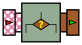

public class UpdateClassifier
extends ca.uqac.lif.cep.UniformProcessor
Classifier using input events as its instances.
Graphically, this processor is illustrated as follows:

The classification process is based on n Attributes, named
A1, … An. Each attribute
can be either numerical or categorical (i.e. taking its value from a list
of predefined constants). One of these attributes, Ac,
is called the class attribute. The learning process consists of
finding a function (the "classifier") which can predict the value of
Ac based on the value of the other attributes.
The processor receives an input stream which can be made of two things:
Collection of such arrays.
Every time a new instance (or set of instances) is given to the processor, it
creates an Instance from it, and then updates a Weka Classifier
object. The processor thus produces a stream of classifiers. Since updating a
classifier can be a time consuming operation, the processor can be told to
accumulate instances for some time, and only update the classifier every
n events. In all cases, the processor outputs a classifier upon every
output event: either an updated classifier, or the last output classifier.
| Modifier and Type | Field and Description |
|---|---|
protected weka.core.Attribute[] |
m_attributes
The list of attributes that are given to the classifier
|
protected weka.classifiers.Classifier |
m_classifier
The classifier that will be applied on the instances
|
protected java.lang.String |
m_dataSetName
A name given to the dataset.
|
protected int |
m_eventsSinceUpdate
The number of input events since the last time the classifier has
been updated.
|
protected long |
m_instanceCount
The number of input events received so far
|
protected weka.core.Instances |
m_instances
The set of instances.
|
protected int |
m_instanceSize
The list of instances given to the processor.
|
protected boolean |
m_makeCopy
Whether to output the classifier, or a clone of the classifier.
|
protected int |
m_rollWidth
The size of the circular buffer storing the instances
to be learned.
|
protected int |
m_updateInterval
The number of new input events required to update the classifier.
|
protected static int |
s_capacity
A capacity value, necessary when creating the
Instances
collection. |
| Constructor and Description |
|---|
UpdateClassifier(weka.classifiers.Classifier c,
int update_interval,
int roll_width,
java.lang.String name,
weka.core.Attribute... attributes)
Creates a new update classifier processor.
|
UpdateClassifier(weka.classifiers.Classifier c,
java.lang.String name,
weka.core.Attribute... attributes)
Creates a new update classifier processor, which updates the classifier
upon every input event.
|
| Modifier and Type | Method and Description |
|---|---|
protected boolean |
compute(java.lang.Object[] inputs,
java.lang.Object[] outputs) |
UpdateClassifier |
duplicate(boolean with_state) |
weka.core.Attribute[] |
getAttributes()
Gets the attributes handled by the classifier used by this processor
|
weka.core.Instances |
getDataset()
Gets the dataset created by this processor
|
long |
getInstanceCount()
Gets the number of instances fed to the classifier
|
UpdateClassifier |
makeCopy(boolean b)
Sets whether the processor should output its own internal classifier,
or a clone of this classifier.
|
void |
reset() |
UpdateClassifier |
setUpdateInterval(int interval)
Sets the number of new input events required to update the internal
classifier.
|
compute, getPullableOutput, getPushableInput, onEndOfTrace, onEndOfTraceallNull, associateTo, associateToInput, associateToOutput, duplicate, duplicateInto, equals, getContext, getContext, getEmptyQueue, getEventTracker, getId, getInputArity, getInputType, getInputTypesFor, getOutputArity, getOutputType, getPullableInput, getPullableOutput, getPushableInput, getPushableOutput, hashCode, newContext, setContext, setContext, setEventTracker, setPullableInput, setPushableOutput, start, startAll, stop, stopAllprotected java.lang.String m_dataSetName
protected int m_instanceSize
protected weka.core.Instances m_instances
protected int m_rollWidth
protected static final transient int s_capacity
Instances
collection.protected final weka.core.Attribute[] m_attributes
protected weka.classifiers.Classifier m_classifier
protected int m_updateInterval
protected int m_eventsSinceUpdate
protected long m_instanceCount
protected boolean m_makeCopy
public UpdateClassifier(weka.classifiers.Classifier c,
int update_interval,
int roll_width,
java.lang.String name,
weka.core.Attribute... attributes)
c - The classifier used to classify the instances. Depending on the
actual Classifier instance used, a different classification
algorithm will be used to classify the instances. Please refer to Weka's
documentation for information about how to create a classifier.update_interval - The number of new input events required to
update the classifier. Between these, the classifier from the last
update will be output. By default, the interval is 1 (i.e. the processor
updates the classifier upon every input event).roll_width - The size of the circular buffer storing the instances
to be learned. If set to a number less than 1, the buffer will store all
the instances. Otherwise, only the last roll_width instances are
kept.name - A name given to the dataset corresponding to the input events.
This is because Weka requires sets of instances to be given a name.attributes - A list of Attributes describing the elements
of the array given as input to the processor. The i-th attribute
object describes the contents of the i-th element of the input
array.public UpdateClassifier(weka.classifiers.Classifier c,
java.lang.String name,
weka.core.Attribute... attributes)
c - The classifier used to classify the instances. Depending on the
actual Classifier instance used, a different classification
algorithm will be used to classify the instances. Please refer to Weka's
documentation for information about how to create a classifier.name - A name given to the dataset corresponding to the input events.
This is because Weka requires sets of instances to be given a name.attributes - A list of Attributes describing the elements
of the array given as input to the processor. The i-th attribute
object describes the contents of the i-th element of the input
array.public UpdateClassifier setUpdateInterval(int interval)
interval - The interval. Must be greater than 0.protected boolean compute(java.lang.Object[] inputs,
java.lang.Object[] outputs)
compute in class ca.uqac.lif.cep.UniformProcessorpublic UpdateClassifier makeCopy(boolean b)
b - Set to true to create a copy of the internal
classifier, false otherwise (default). Setting this parameter
to true obviously has consequences on the throughput of the
processor.public long getInstanceCount()
public UpdateClassifier duplicate(boolean with_state)
duplicate in interface ca.uqac.lif.cep.Duplicableduplicate in class ca.uqac.lif.cep.Processorpublic weka.core.Instances getDataset()
public weka.core.Attribute[] getAttributes()
public void reset()
reset in class ca.uqac.lif.cep.ProcessorCopyright © Sylvain Hallé. All Rights Reserved.